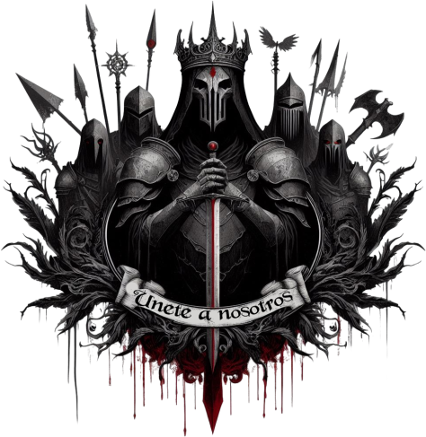

¡Alístate!

©: AI, thecorvus. ¡Bienvenido a mi 'pequeño' proyecto de escritura y rol, Leyendas de Fraegyr! Lo que me traigo entre manos empezó siendo una práctica personal para mejorar mis habilidades de diseño web, y al querer mezclarlo con algo que me apasiona, como es el escribir, he querido llevarlo al mundo del rol, creando una comunidad completamente abierta. La palabra 'comunidad' a veces da asco, pero simplemente quiero... Que tengamos un 'hub', algo que nos una. Somos todos completamente libres de expandir nuestros personajes por donde y como queramos. Si tienes ideas sobre un personaje con el que te emocione participar, te invito a unirte a nuestra comunidad. Nuestra imaginación es la clave para pasar el rato, y después de todo, si estás aquí, es porque te gusta escribir y rolear. Los únicos requisitos son que uses un personaje original, y siempre intento dar crédito a los artitas. Enfatizo en que puedes contribuir a la historia, ya que quiero que sea algo evolutivo, llegando a modificar el mapa si simplemente gustais de ello o teneis alguna idea, creando ciudades nuevas, hermandades... Si quieres unirte o tienes alguna duda, siempre ando por estos lares: Discord: thecorvus. Twitter: @RockNGhosts |

Leyendas de Fraegyr